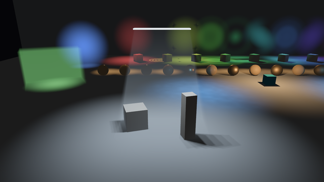
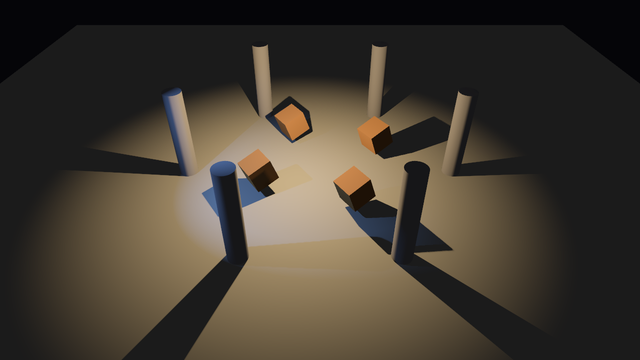
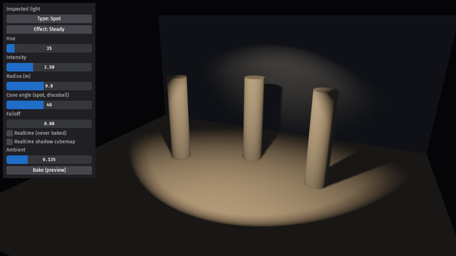
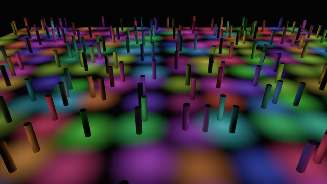

A lighting toolkit for Bevy
Baked detail.
Living light.
Bake the shadows. Keep the light alive. Explore per-texel shadow detail, animated light effects and realtime shadows — running in your browser.
Step into the light
Four scenes. No installation.

01 / ExploreThe full spectrum
Lighting laboratory
Light types, area lights, animated effects, cookies, metallic surfaces and volumetric atmosphere.

02 / In motionNothing stands still
Shadows in motion
Moving lights and spinning geometry, connected by realtime variance shadow cubemaps.

03 / Hands onMake it your own
Light inspector
Dial in color, intensity and falloff. Change effects, then bake with the in-scene controls.

04 / Under loadA little more light
256 lights. Your GPU.
A browser-sized stress scene with engine-reported frame time. See how your hardware handles it.